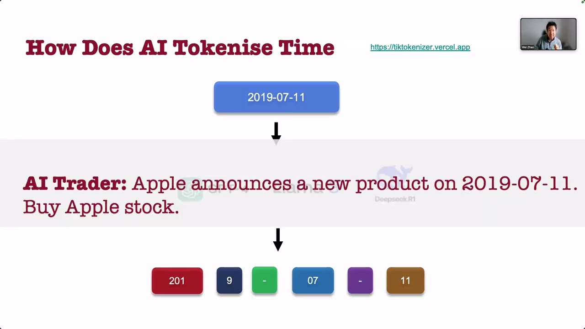
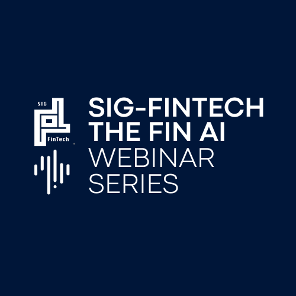

20:50EventsWebinar Series
SIG-FinTech × The Fin AI Webinar Series
An ongoing online webinar series co-hosted with ACL SIG-FinTech, bringing together researchers and practitioners to share recent work across financial language models, agents, and benchmarks.
Ongoing
Format
Online webinar
Cadence
Ongoing
Co-hosted with
ACL SIG-FinTech
Recordings
YouTube

Open to all
Join the series
Sessions are open to all. Sign up to receive announcements for upcoming webinars, or browse recordings of past sessions.